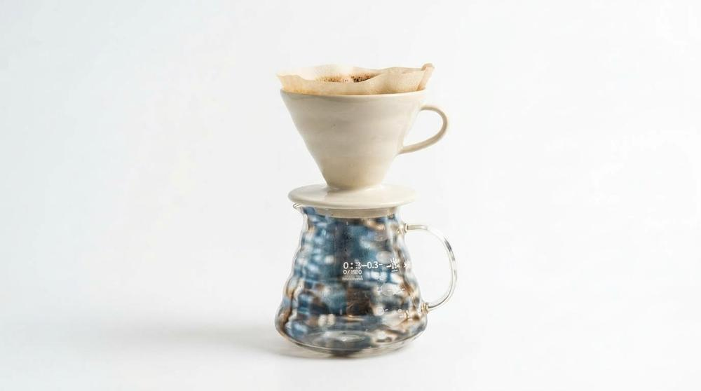

Visi
Kami mau jadi tempat singgah yang pertama diingat warga Kebon Jeruk kalau lagi pengin kopi. Bukan cuma karena rasanya, tapi karena betah: bisa kerja, bisa belajar, bisa ngobrol, dan besoknya pengin balik lagi.
Tentang Kami
Mampir Kopi adalah kedai kopi rumahan di Kebon Jeruk, Jakarta Barat. Buat kami, kopi yang baik tidak harus mahal atau ribet. Cukup diseduh dengan benar, disajikan hangat, dan dinikmati tanpa buru-buru.
Kami mau jadi tempat singgah yang pertama diingat warga Kebon Jeruk kalau lagi pengin kopi. Bukan cuma karena rasanya, tapi karena betah: bisa kerja, bisa belajar, bisa ngobrol, dan besoknya pengin balik lagi.
Awalnya bukan kedai. Cuma kebiasaan menyeduh kopi untuk tetangga dan teman yang mampir ke teras kecil kami di Sukabumi Selatan. Yang datang makin banyak, yang minta dibuatkan kopi makin sering, sampai akhirnya teras itu jadi kedai. Menunya tetap sederhana: kopi susu andalan, kopi tubruk, manual brew, dan wedang jahe buat hari hujan.
Lewat website ini kamu bisa lihat menu, pesan dulu, lalu tinggal ambil di kasir. Atau minta diantar ke alamatmu. Kode pesanannya bisa dilacak kapan saja dari halaman Lacak Pesanan.

Jl. Ff No. 24, RT.7/RW.5, Sukabumi Selatan, Kebon Jeruk, Jakarta Barat, DKI Jakarta 11560
Jam buka: Setiap hari · 08.00–22.00 WIB
Instagram: @mampir.kopi_
Peta tidak dapat dimuat.
Buka rute di Google Maps